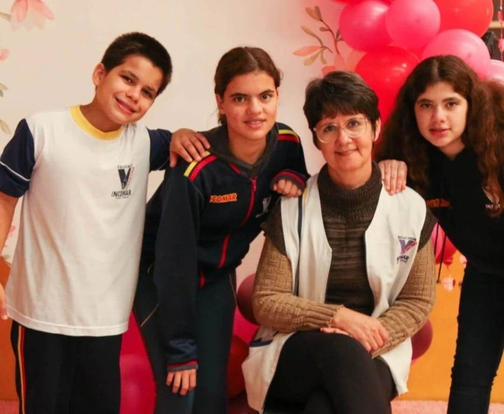

História

Nossa História
A propriedade é familiar e traz uma rica herança cultural. Nosso objetivo é receber as pessoas com o que há de belo e gostoso no interior.
A queijaria começou com a proposta de agregar valor ao leite de vaca produzido na propriedade, que possui o selo “Livre de Brucelose e Tuberculose” e animais que recebem uma dieta de qualidade.
Os queijos são produzidos com uma tecnologia de excelência desenvolvida pelo Biopark. Além disso, contamos com um cenário bucólico, muita paixão e ousadia. Herdamos da família o gosto pelos queijos e o zelo pelos animais. Vivemos nossa infância na roça, trabalhando no cuidado do gado e na produção de queijos. Depois de exercermos outras profissões, voltamos para a vida no campo.

Inspiração do nome
O nome da queijaria foi criado pelos filhos da Cirlei e do Everaldo.
- Á
- TA
- NI
Alexandre
Tais
Nicole